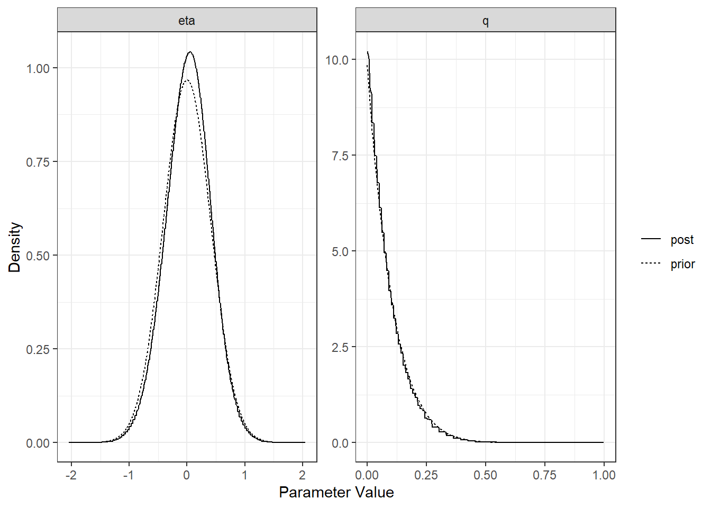
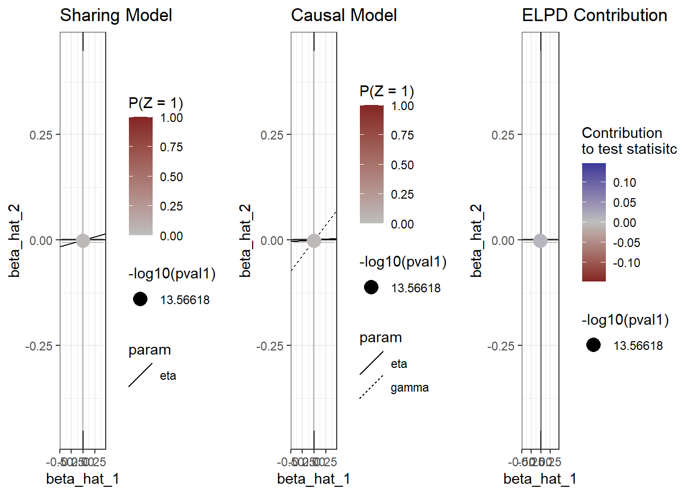

Last updated: 2021-02-08
Checks: 6 1
Knit directory: bivariate-models/
This reproducible R Markdown analysis was created with workflowr (version 1.6.2). The Checks tab describes the reproducibility checks that were applied when the results were created. The Past versions tab lists the development history.
The R Markdown file has unstaged changes. To know which version of the R Markdown file created these results, you’ll want to first commit it to the Git repo. If you’re still working on the analysis, you can ignore this warning. When you’re finished, you can run wflow_publish to commit the R Markdown file and build the HTML.
Great job! The global environment was empty. Objects defined in the global environment can affect the analysis in your R Markdown file in unknown ways. For reproduciblity it’s best to always run the code in an empty environment.
The command set.seed(20210203) was run prior to running the code in the R Markdown file. Setting a seed ensures that any results that rely on randomness, e.g. subsampling or permutations, are reproducible.
Great job! Recording the operating system, R version, and package versions is critical for reproducibility.
Nice! There were no cached chunks for this analysis, so you can be confident that you successfully produced the results during this run.
Great job! Using relative paths to the files within your workflowr project makes it easier to run your code on other machines.
Great! You are using Git for version control. Tracking code development and connecting the code version to the results is critical for reproducibility.
The results in this page were generated with repository version 1b2d7bb. See the Past versions tab to see a history of the changes made to the R Markdown and HTML files.
Note that you need to be careful to ensure that all relevant files for the analysis have been committed to Git prior to generating the results (you can use wflow_publish or wflow_git_commit). workflowr only checks the R Markdown file, but you know if there are other scripts or data files that it depends on. Below is the status of the Git repository when the results were generated:
Ignored files:
Ignored: .Rhistory
Ignored: .Rproj.user/
Unstaged changes:
Modified: analysis/MR-Sibei.Rmd
Note that any generated files, e.g. HTML, png, CSS, etc., are not included in this status report because it is ok for generated content to have uncommitted changes.
These are the previous versions of the repository in which changes were made to the R Markdown (analysis/MR-Sibei.Rmd) and HTML (docs/MR-Sibei.html) files. If you’ve configured a remote Git repository (see ?wflow_git_remote), click on the hyperlinks in the table below to view the files as they were in that past version.
| File | Version | Author | Date | Message |
|---|---|---|---|---|
| Rmd | 1b2d7bb | Sibei Liu | 2021-02-08 | update |
| html | 1b2d7bb | Sibei Liu | 2021-02-08 | update |
| Rmd | bdcc2fd | Sibei Liu | 2021-02-08 | update |
| html | bdcc2fd | Sibei Liu | 2021-02-08 | update |
| Rmd | 3920d11 | Sibei Liu | 2021-02-07 | add code |
| html | 3920d11 | Sibei Liu | 2021-02-07 | add code |
| Rmd | 3ce71b3 | Sibei Liu | 2021-02-05 | format edit |
| html | 3ce71b3 | Sibei Liu | 2021-02-05 | format edit |
| Rmd | 4a44692 | Sibei Liu | 2021-02-05 | transform the data |
| html | 4a44692 | Sibei Liu | 2021-02-05 | transform the data |
| Rmd | 8cff078 | Sibei Liu | 2021-02-05 | package installed |
| html | 8cff078 | Sibei Liu | 2021-02-05 | package installed |
| Rmd | c698cab | Sibei Liu | 2021-02-03 | update |
| html | c698cab | Sibei Liu | 2021-02-03 | update |
| Rmd | d9e1b1c | Sibei Liu | 2021-02-03 | web updtae |
| html | d9e1b1c | Sibei Liu | 2021-02-03 | web updtae |
| Rmd | d38225c | Sibei Liu | 2021-02-03 | add some files |
| html | d38225c | Sibei Liu | 2021-02-03 | add some files |
asthma_V1 asthma_CHR asthma_POS asthma_REF asthma_ALT
1: 16_11031741_A_G 16 11031741 G A
2: 16_11031846_C_T 16 11031846 T C
3: 16_11031883_A_C 16 11031883 A C
4: 16_11032195_A_G 16 11032195 A G
5: 16_11032226_G_GA 16 11032226 G GA
6: 16_11032424_A_C 16 11032424 A C
asthma_SNP asthma_BETA asthma_SE asthma_P asthma_Z
1: rs79748582 0.008690250 0.00105534 1.80204e-16 8.23456981
2: rs575622542 -0.011790400 0.00721980 1.02456e-01 -1.63306180
3: rs560893521 0.004589740 0.01021210 6.53115e-01 0.44943900
4: rs74245513 -0.002022650 0.00134911 1.33809e-01 -1.49924918
5: 16:11032226_GA_G -0.000110200 0.00119135 9.26300e-01 -0.09250100
6: rs79429692 0.000252771 0.00767281 9.73719e-01 0.03294431 BMI_V1 BMI_CHR BMI_BP BMI_REF BMI_ALT BMI_SNP
1: rs575622542 16 11031846 T C rs575622542
2: rs560893521 16 11031883 A C rs560893521
3: rs74245513 16 11032195 A G rs74245513
4: 16:11032226_GA_G 16 11032226 G GA 16:11032226_GA_G
5: rs79429692 16 11032424 A C rs79429692
6: rs76284787 16 11032774 A G rs76284787
BMI_BETA BMI_SE BMI_P BMI_Z
1: 0.01423150 0.01837130 0.570 0.5680515
2: 0.05144910 0.02585070 0.058 1.8956979
3: 0.00216789 0.00343834 0.510 0.6588377
4: 0.00375400 0.00303706 0.220 1.2265281
5: -0.00591978 0.01938120 0.810 -0.2404260
6: 0.00933315 0.01020530 0.350 0.9345893# for merge two data traits and finding the common SNPs
data <- gwas_merge(asthma, BMI, snp_name_cols = c("asthma_SNP", "BMI_SNP"),
beta_hat_cols = c("asthma_BETA", "BMI_BETA"),
se_cols = c("asthma_SE", "BMI_SE"),
A1_cols = c("asthma_REF", "BMI_REF"),
A2_cols = c("asthma_ALT", "BMI_ALT"))Formatting X1
There are 6975 variants.
Removing 3529 duplicated variants leaving 1314 variants.
Removing 51 variants with illegal allelse leaving 1314 variants.
Removed 184 variants with ambiguous strand.
Flipping strand and effect allele so A1 is always A
Returning 1130 variants.
Formatting X2
There are 8862 variants.
Removing 4590 duplicated variants leaving 1560 variants.
Removing 57 variants with illegal allelse leaving 1560 variants.
Removed 230 variants with ambiguous strand.
Flipping strand and effect allele so A1 is always A
Returning 1330 variants.
After merging and removing variants with inconsistent alleles, there are 1081 variants that are present in both studies and can be used with CAUSE.# formated data
head(data) snp beta_hat_1 seb1 beta_hat_2 seb2 A1 A2
1 rs150258910 -4.42786e-03 0.003055580 -0.000894756 0.00778383 A C
2 rs12922090 -6.20602e-04 0.001100210 -0.000689250 0.00280498 A G
3 rs12922409 -6.05009e-04 0.001100350 -0.000729873 0.00280532 A G
4 rs539184488 -5.97138e-05 0.010583600 0.007837880 0.02683000 A G
5 rs35051965 8.68803e-04 0.000944880 -0.000741283 0.00240700 A G
6 rs56136462 1.79333e-03 0.000962815 0.002083740 0.00245190 A Gdim(data)[1] 1081 7Warning: Among the two traits, only 1081 common SNP variants, small number will lead to poor estimates of the mixing parameters whih leads to bad model comparisons
set.seed(100)
varlist <- data$snp
params <- est_cause_params(data, varlist)Estimating CAUSE parameters with 1081 variants.
1 0.3226372
2 0.008047968
3 0.0003166234
4 1.258583e-05
5 5.004749e-07
6 1.985126e-08 params$rho
[1] 0.3310149
$pi
[1] 0.16204943 0.00000000 0.48408372 0.10515948 0.00000000 0.00000000
[7] 0.08757081 0.16113657 0.00000000 0.00000000 0.00000000 0.00000000
[13] 0.00000000 0.00000000 0.00000000 0.00000000 0.00000000 0.00000000
[19] 0.00000000 0.00000000 0.00000000 0.00000000 0.00000000 0.00000000
$mix_grid
S1 S2 pi
1 0.000000000 0.00000000 0.16204943
2 0.004273606 0.00000000 0.48408372
3 0.017094425 0.00000000 0.10515948
4 0.000000000 0.04468453 0.08757081
5 0.003021896 0.04468453 0.16113657
$loglik
[1] 7255.658
$PIS
pi pi pi pi pi
[1,] 0.14566468 0.16188921 0.16204346 0.16204919 0.16204942 0.16204943
[2,] 0.00000000 0.00000000 0.00000000 0.00000000 0.00000000 0.00000000
[3,] 0.50701234 0.48470790 0.48410828 0.48408470 0.48408376 0.48408372
[4,] 0.10067776 0.10488999 0.10514870 0.10515905 0.10515946 0.10515948
[5,] 0.00000000 0.00000000 0.00000000 0.00000000 0.00000000 0.00000000
[6,] 0.00000000 0.00000000 0.00000000 0.00000000 0.00000000 0.00000000
[7,] 0.07784049 0.08726707 0.08755877 0.08757033 0.08757079 0.08757081
[8,] 0.16880474 0.16124584 0.16114079 0.16113673 0.16113657 0.16113657
[9,] 0.00000000 0.00000000 0.00000000 0.00000000 0.00000000 0.00000000
[10,] 0.00000000 0.00000000 0.00000000 0.00000000 0.00000000 0.00000000
[11,] 0.00000000 0.00000000 0.00000000 0.00000000 0.00000000 0.00000000
[12,] 0.00000000 0.00000000 0.00000000 0.00000000 0.00000000 0.00000000
[13,] 0.00000000 0.00000000 0.00000000 0.00000000 0.00000000 0.00000000
[14,] 0.00000000 0.00000000 0.00000000 0.00000000 0.00000000 0.00000000
[15,] 0.00000000 0.00000000 0.00000000 0.00000000 0.00000000 0.00000000
[16,] 0.00000000 0.00000000 0.00000000 0.00000000 0.00000000 0.00000000
[17,] 0.00000000 0.00000000 0.00000000 0.00000000 0.00000000 0.00000000
[18,] 0.00000000 0.00000000 0.00000000 0.00000000 0.00000000 0.00000000
[19,] 0.00000000 0.00000000 0.00000000 0.00000000 0.00000000 0.00000000
[20,] 0.00000000 0.00000000 0.00000000 0.00000000 0.00000000 0.00000000
[21,] 0.00000000 0.00000000 0.00000000 0.00000000 0.00000000 0.00000000
[22,] 0.00000000 0.00000000 0.00000000 0.00000000 0.00000000 0.00000000
[23,] 0.00000000 0.00000000 0.00000000 0.00000000 0.00000000 0.00000000
[24,] 0.00000000 0.00000000 0.00000000 0.00000000 0.00000000 0.00000000
pi
[1,] 0.16204943
[2,] 0.00000000
[3,] 0.48408372
[4,] 0.10515948
[5,] 0.00000000
[6,] 0.00000000
[7,] 0.08757081
[8,] 0.16113657
[9,] 0.00000000
[10,] 0.00000000
[11,] 0.00000000
[12,] 0.00000000
[13,] 0.00000000
[14,] 0.00000000
[15,] 0.00000000
[16,] 0.00000000
[17,] 0.00000000
[18,] 0.00000000
[19,] 0.00000000
[20,] 0.00000000
[21,] 0.00000000
[22,] 0.00000000
[23,] 0.00000000
[24,] 0.00000000
$RHO
[1] 0.0000000 0.3226372 0.3306852 0.3310018 0.3310144 0.3310149 0.3310149
$LLS
[1] 7244.325 7255.280 7255.650 7255.658 7255.658 7255.658 7255.658 7255.658
[9] 7255.658 7255.658 7255.658 7255.658 7255.658
$converged
[1] TRUE
$prior
[1] 51.91503
$var
[,1]
[1,] 0.003927044
attr(,"class")
[1] "cause_params"head(params$mix_grid) S1 S2 pi
1 0.000000000 0.00000000 0.16204943
2 0.004273606 0.00000000 0.48408372
3 0.017094425 0.00000000 0.10515948
4 0.000000000 0.04468453 0.08757081
5 0.003021896 0.04468453 0.16113657We have estimated that 16% of variants have trait 1 variance and trait 2 equal to 0 meaning that they have no association with either trait.
This step requires LD estimates. Download estimates of chromsome 16 made in the 1000 Genomes CEU population from “https://zenodo.org/record/1464357#.W8a-fxROmV4”
#download.file("https://zenodo.org/record/1464357/files/chr16_AF0.05_0.1.RDS?download=1", destfile = "../chr16_AF0.05_0.1.RDS")
#download.file("https://zenodo.org/record/1464357/files/chr16_AF0.05_snpdata.RDS?download=1", destfile="../chr16_AF0.05_snpdata.RDS")ld <- readRDS("../chr16_AF0.05_0.1.RDS")
snp_info <- readRDS("../chr16_AF0.05_snpdata.RDS")
head(ld) rowsnp colsnp r2
1 rs76368850 rs542544747 0.2655372
2 rs76368850 rs4021615 0.1397717
3 rs76368850 rs201731689 0.1772501
4 rs76368850 rs572534626 0.1187799
5 rs76368850 rs565960587 0.1528682
6 rs76368850 rs558303720 0.1528682head(snp_info)# A tibble: 6 x 9
AF SNP allele chr pos snp_id region_id map ld_snp_id
<dbl> <chr> <chr> <int> <int> <int> <int> <dbl> <int>
1 0.364 rs76368850 T,C 16 60291 67777509 16 0 67777509
2 0.439 rs542544747 A,C 16 60842 67777531 16 0 67777531
3 0.207 rs4021615 G,A 16 61349 67777546 16 0 67777546
4 0.581 rs201731689 C,G 16 61730 67777556 16 0 67777556
5 0.606 rs572534626 C,G 16 61977 67777564 16 0 67777564
6 0.838 rs565960587 C,A 16 62511 67777581 16 0 67777581The snp_info data frame contains information about all of the chromosome #16 variants with allele frequency greater than 0.05. The only piece of information we need from this data frame is the list of variants SNP column in snp_info data set which provides the total list of variants used in the LD calculations.
variants <- data %>% mutate(pval1 = 2*pnorm(abs(beta_hat_1/seb1), lower.tail=FALSE))
pruned <- ld_prune(variants = variants,
ld = ld, total_ld_variants = snp_info$SNP,
pval_cols = c("pval1"),
pval_thresh = c(1e-3))You have suppplied information for 1081 variants.
Of these, 544 have LD information.length(pruned)[1] 6res <- cause(X=data, variants = pruned, param_ests = params)Estimating CAUSE posteriors using 6 variants.names(res)[1] "sharing" "causal" "elpd" "loos" "data" "sigma_g" "qalpha"
[8] "qbeta" res$elpd model1 model2 delta_elpd se_delta_elpd z
1 null sharing 0.06539795 0.02429909 2.6913738
2 null causal 0.18539268 0.25538647 0.7259299
3 sharing causal 0.11999473 0.23675675 0.5068271model1, model2: The models being compared
delta_elpd: Estimated difference in elpd. If delta_elpd is negative, model 2 is a better fit
se_delta_elpd: Estimated standard error of delta_elpd
z: delta_elpd/se_delta_elpd. A z-score that can be compared to a normal distribution to test if the difference in model fit is significant.
summary(res, ci_size=0.95)p-value testing that causal model is a better fit: 0.69
Posterior medians and 95 % credible intervals:
model gamma eta q
[1,] "Sharing" NA "0.03 (-0.76, 0.78)" "0.06 (0, 0.3)"
[2,] "Causal" "0.15 (-0.26, 0.53)" "0.01 (-0.77, 0.77)" "0.06 (0, 0.3)"plot(res$sharing)
plot(res, type="data")
sessionInfo()R version 4.0.3 (2020-10-10)
Platform: x86_64-w64-mingw32/x64 (64-bit)
Running under: Windows 10 x64 (build 19042)
Matrix products: default
locale:
[1] LC_COLLATE=Chinese (Simplified)_China.936
[2] LC_CTYPE=Chinese (Simplified)_China.936
[3] LC_MONETARY=Chinese (Simplified)_China.936
[4] LC_NUMERIC=C
[5] LC_TIME=Chinese (Simplified)_China.936
attached base packages:
[1] stats graphics grDevices utils datasets methods base
other attached packages:
[1] installr_0.22.0 workflowr_1.6.2 eply_0.1.2 ieugwasr_0.1.5
[5] data.table_1.13.2 cause_1.0.0 forcats_0.5.0 stringr_1.4.0
[9] dplyr_1.0.2 purrr_0.3.4 tidyr_1.1.2 tibble_3.0.4
[13] ggplot2_3.3.2 tidyverse_1.3.0 readr_1.4.0
loaded via a namespace (and not attached):
[1] matrixStats_0.57.0 fs_1.5.0 lubridate_1.7.9.2
[4] doParallel_1.0.16 httr_1.4.2 rprojroot_2.0.2
[7] numDeriv_2016.8-1.1 tools_4.0.3 backports_1.2.0
[10] utf8_1.1.4 R6_2.5.0 irlba_2.3.3
[13] DBI_1.1.0 colorspace_2.0-0 withr_2.3.0
[16] tidyselect_1.1.0 gridExtra_2.3 compiler_4.0.3
[19] git2r_0.28.0 cli_2.1.0 rvest_0.3.6
[22] xml2_1.3.2 labeling_0.4.2 scales_1.1.1
[25] SQUAREM_2021.1 mixsqp_0.3-43 digest_0.6.27
[28] R.utils_2.10.1 rmarkdown_2.5 pscl_1.5.5
[31] pkgconfig_2.0.3 htmltools_0.5.0 dbplyr_2.0.0
[34] rlang_0.4.10 readxl_1.3.1 rstudioapi_0.13
[37] farver_2.0.3 generics_0.1.0 jsonlite_1.7.2
[40] R.oo_1.24.0 magrittr_2.0.1 loo_2.4.1
[43] Matrix_1.2-18 Rcpp_1.0.6 munsell_0.5.0
[46] fansi_0.4.1 R.methodsS3_1.8.1 lifecycle_0.2.0
[49] stringi_1.5.3 whisker_0.4 yaml_2.2.1
[52] MASS_7.3-53 grid_4.0.3 parallel_4.0.3
[55] promises_1.1.1 crayon_1.3.4 lattice_0.20-41
[58] haven_2.3.1 hms_0.5.3 knitr_1.30
[61] pillar_1.4.6 codetools_0.2-16 reprex_0.3.0
[64] glue_1.4.2 evaluate_0.14 RcppParallel_5.0.2
[67] modelr_0.1.8 vctrs_0.3.6 httpuv_1.5.4
[70] foreach_1.5.1 cellranger_1.1.0 gtable_0.3.0
[73] assertthat_0.2.1 ashr_2.2-32 xfun_0.19
[76] broom_0.7.2 later_1.1.0.1 truncnorm_1.0-8
[79] intervals_0.15.2 iterators_1.0.13 ellipsis_0.3.1